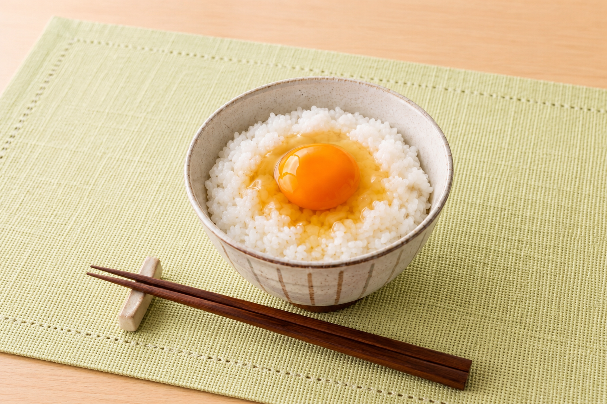
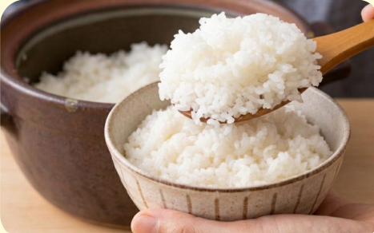
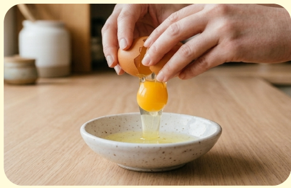
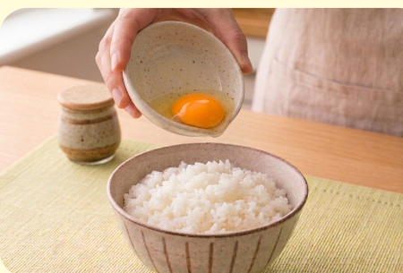
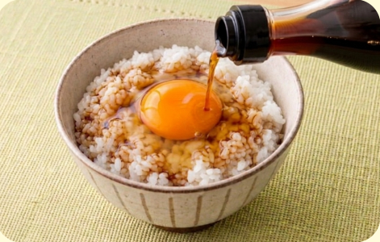

難易度１ ★☆☆
材料（一人分）
- ・ご飯お好きな量
- ・卵１個
- ・しょうゆ適量
必要な道具
- ・お皿
- ・菜箸
- ・スプーン
注目ポイント
- 🔥 火を使わない
- 🔪 包丁を使わない
- ⏰ ５分以内に完成
作り方
① ご飯を茶碗によそいます。冷たいご飯でも作れますが、 温かいご飯がおすすめです。

② 卵を小皿に割ります。直接ご飯に割らず、 小皿に割ると殻が取りやすくなります。

③ 殻が入っていないことを確認したら、 ご飯の上に卵をのせます。

④ しょうゆをかけて完成です。 お好みでのりやかつお節をのせてもおいしいです。

調理のコツ
卵は平らな場所で軽くコンと割ると
きれいに割れます。
しょうゆは少しずつ入れると
味の調整がしやすいです。
困ったときは
Q. 醤油を入れすぎた！
A. ご飯を少し足しましょう。
Q. 殻が入った…
A. 卵の殻で取ると取りやすいです。